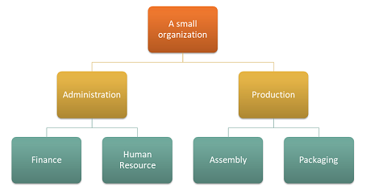

Kostenaufschlüsselungsrichtlinie und Gemeinkostenberechnung
Important
Dynamics 365 for Finance and Operations hat sich zu speziell entwickelten Anwendungen entwickelt, mit denen Sie bestimmte Geschäftsfunktionen verwalten können. Weitere Informationen zu diesen Änderungen finden Sie im Dynamics 365-Lizenzierungshandbuch.
Mit Kostenrechnung können Sie einen Einblick erhalten, wie sich der Kostenfluss auf Produkte und Dienste bezieht, die innerhalb einer Organisation geliefert werden. Um die Kostentransparenz anzuzeigen, ist es wichtig, Kostenzuweisung zwischen Kostenobjekten auf Grundlage einer entsprechenden Zuweisungsgrundlage zu erreichen. Standardmäßig wird die Kostenzuweisung für das primäre Kostenelement erreicht. Das ist in einigen Situationen wünschenswert, hat aber mehrere Auswirkungen, die berücksichtigt werden sollten.
Zusätzliche Kostenobjekte werden mit Nullsaldo für das primäre Kostenelement nach Gemeinkostenberechnung beendet.
Die Menge der Kosteneinträgen, die durch Gemeinkostenberechnung generiert wird, kann sehr hoch sein.
Es ist nicht möglich, den Kostenfluss zwischen Kostenobjekten zu verfolgen.
Um diese Auswirkungen zu vermeiden, können Sie mit der Kostenrechnung die Kostenzuweisung konfigurieren, damit sie in den Anforderungen der Berichterstellung auf Führungsebene in Ihrer Organisation entspricht. Dieses Thema erklärt, wie Sie die korrekte Stufe der sekundären Kostenelemente bestimmen und Kostenrollupregeln erstellen können, die in Organisationsberichterstellung und Kostennachweisbarkeit passen.
Note
Sie können Konfigurationen ändern, wenn sich Meldeanforderungen ändern.
Beispiel für die Einrichtung der Kostenrolluprichtlinie
Stellen Sie sich vor, dass eine Organisation die folgende Struktur mit 4 Kostenstellen hat.

Kostenobjektdimension
| Kostenstellen | Beschreibung |
|---|---|
| CC001 | Personalverwaltung |
| CC002 | Finanzen |
| CC003 | Montage |
| CC004 | Verpackung |
Kostenelementdimension
| Kostenelemente | Beschreibung | Typ |
|---|---|---|
| 1001 | Elektrizität | Primär |
| 1002 | Löhne | Primär |
| 1003 | Werbung | Primär |
Eine Dimensionshierarchie, die die Meldeanforderungen der Organisation erfüllt, kann wie folgt eingerichtet werden.
Dimensionshierarchiedetails
| Dimensionshierarchiename | Dimensionen | Dimensionshierarchie-Typname | Zugriffslistenhierarchie |
|---|---|---|---|
| Organisation | Kostenstellen | Dimensionsklassifizierungshierarchie | Nr. |
Dimensionshierarchie
| Dimensionsmitgliedsbereiche | ||
|---|---|---|
| Knoten | Ausgangsdimensionsmitglied | Zieldimensionsmitglied |
| Organisation | ||
| Verwaltung | ||
| Finanzen | CC001 | CC001 |
| Personalverwaltung | CC002 | CC002 |
| Produktion | ||
| Verpackung | CC003 | CC003 |
| Montage | CC004 | CC004 |
Eine Dimensionshierarchie, die die Meldeanforderungen der Organisation erfüllt, kann wie folgt eingerichtet werden.
Dimensionshierarchiedetails
| Dimensionshierarchiename | Dimensionen | Dimensionshierarchie-Typname |
|---|---|---|
| Gewinn- und Verlustaufstellung | Kostenelemente | Dimensionsklassifizierungshierarchie |
Dimensionshierarchie
| Dimensionsmitgliedsbereiche | ||
|---|---|---|
| Knoten | Ausgangsdimensionsmitglied | Zieldimensionsmitglied |
| Gewinn- und Verlustaufstellung | ||
| Primäre Kosten | 10001 | 10003 |
Nachdem die Hauptbucheinträge verarbeitet wurden, sieht das Kosteneintragssaldo nach Kostenobjekt so aus.
| Kostenobjekt | Summe | ||||
|---|---|---|---|---|---|
| Kostenelement | CC001 | CC002 | CC003 | CC004 | |
| 1001 Elektrizität | 100,00 | 200.00 | 6.000,00 | 2.000,00 | 8.300,00 |
| 1002 Löhne | 10.000,00 | 10.000,00 | 8.000,00 | 6.500,00 | 34.500,00 |
| 1003 Werbung | 0.00 | 4.000,00 | 0.00 | 0.00 | 4.000,00 |
| 10.100,00 | 14.200,00 | 14.000,00 | 8.500,00 | 46.800,00 |
Statistische Dimension
| Statistische Elemente | Beschreibung |
|---|---|
| SE-1 | HR-Dienste |
| SE-2 | Finanzdienste |
Kostenobjekt CC001 Personalverwaltung trägt HR-Dienste zu mehreren Kostenobjekten bei.
HR-Dienste werden nach folgender Verteilung der Größe genutzt.
| Kostenobjekt | Beschreibung | HR-Dienste |
|---|---|---|
| CC002 | Finanzen | 35 |
| CC003 | Montage | 55 |
| CC004 | Verpackung | 10 |
Kostenobjekt CC002 Finanzen trägt zu mehreren Kostenobjekten bei.
Finanzdienstleistungen werden nach folgender Verteilung der Größe genutzt.
| Kostenobjekt | Beschreibung | Finanzdienste |
|---|---|---|
| CC003 | Montage | 65 |
| CC004 | Verpackung | 35 |
Kostenzuweisungsrichtlinien können wie folgt eingerichtet werden.
| Richtlinienname | Beschreibung | Kostenobjekt-Dimensionshierarchie | Statistische Dimension | Kostenelementdimension |
|---|---|---|---|---|
| 2017 | Kostenzuweisung | Organisation | Statistische Elemente | Kostenelemente |
Kostenzuweisungsregeln können wie folgt eingerichtet werden.
| Kostenobjekt-Dimensionshierarchieknoten | Kostenverhalten | Verteilschlüssel |
|---|---|---|
| CC001 | Gesamt | HR-Dienste |
| CC002 | Gesamt | Finanzdienstleistungen |
Wie Kosten zwischen Kostenstellen fließen
Wenn Sie mehr darüber erfahren möchten, wie Kosten zwischen den Kostenstellen in der Organisation fließen, können Sie für jede Kostenstelle Kostenelemente vom Typ Sekundär erstellen. Diese Kostenelemente werden dann dazu verwendet, während der Gemeinkostenberechnung Salden zwischen den Kostenstellen zu übertragen.
Kostenelementdimensionsmitglieder können wie folgt eingerichtet werden.
| Kostenelemente | Typ | |
|---|---|---|
| 1001 | Elektrizität | Primär |
| 1002 | Löhne | Primär |
| 1003 | Werbung | Primär |
| SC-CC001 | Personalverwaltung | Sekundär |
| SC-CC002 | Finanzen | Sekundär |
| SC-CC003 | Montage | Sekundär |
| SC-CC004 | Verpackung | Sekundär |
Die Dimensionshierarchie Gewinn und Verlustaufstellung muss mit den neuen Dimensionsmitgliedern aktualisiert werden, sodass die Dimensionshierarchie die richtigen Daten enthält, die zum Definieren von Richtlinien und der Berichterstellung verwendet werden können.
Dimensionshierarchiedetails
| Dimensionshierarchiename | Dimensionen | Dimensionshierarchie-Typname |
|---|---|---|
| Gewinn- und Verlustaufstellung | Kostenelemente | Dimensionsklassifizierungshierarchie |
Dimensionshierarchie
| Dimensionsmitgliedsbereiche | ||
|---|---|---|
| Knoten | Ausgangsdimensionsmitglied | Zieldimensionsmitglied |
| Gewinn- und Verlustaufstellung | ||
| Primäre Kosten | 10001 | 10003 |
| Sekundäre Kosten | SC-CC001 | SC-CC004 |
Erstellen Sie eine Kostenrolluprichtlinie, bei der jede Kostenstelle einem entsprechenden Kostenelement vom Typ Sekundär zugeordnet ist.
Kostenaufschlüsselungsrichtlinien
| Richtlinienname | Beschreibung | Kostenobjekt-Dimensionshierarchie | Kostenelement-Dimensionshierarchie |
|---|---|---|---|
| 2017 | Kostenfluss | Organisation | Gewinn- und Verlustaufstellung |
Kostenaufschlüsselungsregeln
| Kostenobjekt-Dimensionshierarchieknoten | Kostenelement-Dimensionshierarchieknoten | Sekundäres Kostenelement |
|---|---|---|
| CC001 | Gewinn- und Verlustaufstellung | SC-CC001 |
| CC002 | Gewinn- und Verlustaufstellung | SC-CC002 |
| CC003 | Gewinn- und Verlustaufstellung | SC-CC003 |
| CC004 | Gewinn- und Verlustaufstellung | SC-CC004 |
Gemeinkostenberechnung durchführen
Erfassung
| Erfassung | Journaltyp | Steuerkalenderperiode | Jahr | Periode | Version |
|---|---|---|---|---|---|
| 00002 | Kostenzuteilungserfassung | Steuerlich | 2017 | Periode 1 | Gemeinkostenberechnung / 01-02-2017 11:51:00 PM / Sachkonto /2017 / Periode 1 |
Das System wendet nun die Kostenrolluprichtlinie an, wenn die Kostenobjektsaldo-Erfassungseinträge erstellt werden.
Kostenobjektsaldo-Erfassungseinträge
| Abschlussstichtag | Kostenobjekt | Beschreibung | Kostenelement | Beschreibung | Betrag |
|---|---|---|---|---|---|
| 31-01-2017 | CC001 | Personalverwaltung | SC-CC001 | Personalverwaltung | 10.100,00 |
| 31-01-2017 | CC002 | Finanzen | SC-CC002 | Finanzen | 17.735,00 |
| 31-01-2017 | CC003 | Montage | SC-CC003 | Montage | 31.082,75 |
| 31-01-2017 | CC004 | Verpackung | SC-CC004 | Verpackung | 15.717,25 |
Note
Die Journaleinträge werden auf den Regeln in der Kostenrolluprichtlinie erstellt, wenn eine Richtlinie vorhanden ist. Der angezeigte Saldo ist der Saldo der Gemeinkostenberechnung.
Die Seite Kostenobjekt-Kostenobjektsaldo-Journaleintragsdetails, auf die von den Journaleinträgen zugegriffen wird, zeigt, wie der Saldo erhalten wird.
Beispiel: Der Journaleintrag für Kostenobjekt CC002 Finanzen
Kostenobjekt-Kostenobjektsaldo-Journaleintragsdetails
| Kostenelement-Dimensionsmitglied | Beschreibung | Betrag |
|---|---|---|
| 1001 | Elektrizität | 200.00 |
| 1002 | Löhne | 10.000,00 |
| 1003 | Werbung | 4.000,00 |
| SC-CC001 | Personalverwaltung | 3.535,00 |
Durch Gemeinkostenberechnung erstellte Kosteneinträge
| Kostenobjekt | Beschreibung | Kostenelement | Beschreibung | Betrag | Abschlussstichtag |
|---|---|---|---|---|---|
| CC001 | Personalverwaltung | SC-CC001 | Personalverwaltung | 10.100,00. - | 31-01-2017 |
| CC002 | Finanzen | SC-CC001 | Personalverwaltung | 3.535,00 | 31-01-2017 |
| CC003 | Montage | SC-CC001 | Personalverwaltung | 5.555,00 | 31-01-2017 |
| CC004 | Verpackung | SC-CC001 | Personalverwaltung | 1.010,00 | 31-01-2017 |
| CC002 | Finanzen | SC-CC002 | Finanzen | 17.735,00. - | 31-01-2017 |
| CC003 | Montage | SC-CC002 | Finanzen | 11.527,75 | 31-01-2017 |
| CC004 | Verpackung | SC-CC002 | Finanzen | 6.207,25 | 31-01-2017 |
Nachdem die Gemeinkostenberechnung abgeschlossen wurde, können Sie die Ergebnisse mithilfe von Tools wie Microsoft SharePoint Workspace, Excel oder Power BI melden.
Berichtserstellung in Excel anzeigen
Die Dimensionshierarchien ermöglichen Ihnen, Daten auf verschiedenen Aggregationsebenen anzuzeigen.
Es folgt das Beispiel einer Power Pivot-Berichterstellung in Excel.
| Gewinn- und Verlustaufstellung | Kostenobjekt | Summe | |||
|---|---|---|---|---|---|
| CC001 | CC002 | CC003 | CC004 | ||
| Primäre Kosten | 10.100,00 | 14.200,00 | 14.000,00 | 8.500,00 | 46.800,00 |
| 1001. | 100,00 | 200.00 | 6.000,00 | 2.000,00 | 8.300,00 |
| 1002. | 10.000,00 | 10.000,00 | 8.000,00 | 6.500,00 | 34.500,00 |
| 1003. | 0.00 | 4.000,00 | 0.00 | 0.00 | 4.000,00 |
| Sekundäre Kosten | -10.100,00 | -14.200,00 | 17.082.75 | 7.217,25 | 0,00 |
| SC-CC001 | 10.100,00. - | 3.535,00 | 5.555,00 | 1.010,00 | 0,00 |
| SC-CC002 | 0.00 | 17.735,00. - | 11.527,75 | 6.207,25 | 0,00 |
| SC-CC003 | 0.00 | 0.00 | 0.00 | 0.00 | 0.00 |
| SC-CC004 | 0.00 | 0.00 | 0.00 | 0.00 | 0.00 |
| Summe | 0,00 | 0,00 | 31.082,75 | 15.717,25 | 46.800,00 |
Mithilfe von einer Kostenrolluprichtlinie und Kostenelementen vom Typs "sekundär" können Sie die primären Kosten pro Kostenobjekt für interne Berichte als primäre Kosten nutzen, die nach der Gemeinkostenberechnung verbleiben.
Wenn das gleiche Beispiel ausgeführt wird, ohne die Kostenrolluprichtlinie zu erstellen, sieht das Berichterstellungsergebnis wie unten dargestellt aus. Die Kosten fließen ordnungsgemäß, aber die Nachweisbarkeit und der Einblick darin, wie Kosten zwischen Kostenstellen fließen, gehen verloren.
| Gewinn- und Verlustaufstellung | Kostenobjekt | Summe | |||
|---|---|---|---|---|---|
| CC001 | CC002 | CC003 | CC004 | ||
| Primäre Kosten | 0,00 | 0,00 | 31.082,75 | 15.717,25 | 46.800,00 |
| 1001. | 0.00 | 0.00 | 6.207,75 | 2.092,25 | 8.300,00 |
| 1002. | 0.00 | 0.00 | 22.275,00 | 12.225,00 | 34.500,00 |
| 1003. | 0.00 | 0.00 | 2600,00 | 1.400,00 | 4.000,00 |
| Sekundäre Kosten | 0,00 | 0,00 | 0,00 | 0,00 | 0,00 |
| SC-CC001 | 0.00 | 0.00 | 0.00 | 0.00 | 0,00 |
| SC-CC002 | 0.00 | 0.00 | 0.00 | 0.00 | 0,00 |
| SC-CC003 | 0.00 | 0.00 | 0.00 | 0.00 | 0.00 |
| SC-CC004 | 0.00 | 0.00 | 0.00 | 0.00 | 0.00 |
| Summe | 0,00 | 0,00 | 31.082,75 | 15.717,25 | 46.800,00 |
Abhängig von den Anforderungen für Berichterstellung und Nachweisbarkeit in Ihrer Organisation können Sie die richtige Ebene der sekundären Kosten bestimmen und Kostenrollupregeln erstellen, die Ihrem Bedarf entsprechen.
Die eindeutige Trennung zwischen Kostenzuweisung und Kostenrolluprichtlinien bietet die Flexibilität, um fortlaufende Aktualisierungen vornehmen, ohne dass sie sich gegenseitig beeinflussen.